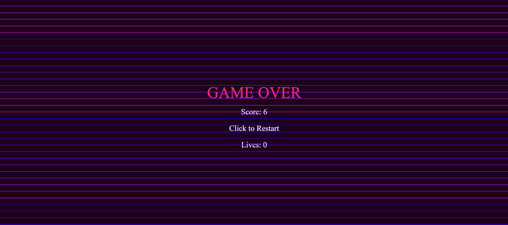
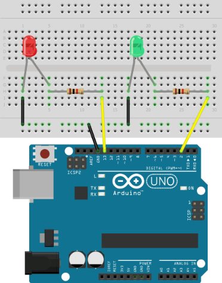

PROJECT OUTLINE
SYNTH RUNNER is a web-based game built using p5.js and Tone.js, enhanced by physical interaction through an Arduino-connected joystick. Players navigate a dynamic environment, collecting musical notes and avoiding obstacles in a race against time. The game features responsive visuals, synthesized audio feedback, and physical controls for an engaging and immersive experience. The background music was created using MIDI.city, a web-based MIDI sequencer.
NARRATIVE DESCRIPTION
IMAGINE diving into a vibrant, neon-lit world where music and motion collide. In SYNTH RUNNER, you take control of a nimble avatar, guided by a physical joystick, as it navigates a stream of falling musical notes and treacherous obstacles. The goal is simple: collect as many notes as possible to build your score while skillfully dodging anything that threatens your survival.
EACH collected note triggers a melodic sound, adding to a dynamic soundscape that evolves with your gameplay. HOWEVER, beware! Colliding with obstacles will cost you precious lives. To aid your journey, you have access to special abilities: a time-freezing power to momentarily slow down the chaos and a magnetic attraction to pull in nearby notes.
AS the game progresses, the tempo and difficulty increase, challenging your reflexes and strategic thinking. The integrated soundtrack, created using MIDI.city, keeps the energy high, reacting to the ebb and flow of the gameplay. SYNTH RUNNER isn't just a game; it's an interactive performance where your movements shape both the visual and auditory experience.
VISUAL ELEMENTS
LANDING PAGE
GAMEPLAY SCREENSHOT
TIME FREEZE EFFECT
MAGNET ACTIVE EFFECT
GAME OVER SCREEN
VIDEO EXAMPLE
GAMEPLAY VIDEO
MIDI.CITY SOUND CREATION
SCHEMATICS AND DIAGRAMS
ARDUINO CONNECTION DIAGRAM
ARDUINO CONNECTION DIAGRAM (LEDs)
ARDUINO CONNECTION DIAGRAM (Joystick)
ARDUINO CONNECTION DIAGRAM: These diagrams illustrate the connections between the joystick, LEDs, and the Arduino board, showcasing how the physical input and outputs are integrated into the game.
SOFTWARE ARCHITECTURE DIAGRAM
CODE SNIPPET
graph LR
A[Joystick (Physical Input)] --> B(Arduino);
B --> C{Serial Communication};
C --> D[p5.js (Web Browser)];
D --> E{Game Logic};
E --> F[Canvas Rendering];
E --> G[Tone.js (Audio Synthesis)];
D --> H[MIDI.city (Background Music Creation)];
THOUGHTS ABOUT FUTURE DEVELOPMENT
- LEVEL DESIGN AND PROGRESSION: Implement distinct levels with unique challenges, layouts, and increasing difficulty.
- POWER-UPS: Introduce more power-ups beyond time freeze and the magnet, such as temporary invincibility or score multipliers.
- ENEMY VARIETY: Add different types of obstacles with varying movement patterns and behaviors.
- SOUND DESIGN ENHANCEMENTS: Explore more complex sound synthesis and effects, perhaps tying specific notes to different sound timbres.
- VISUAL IMPROVEMENTS: Enhance the visual style with more detailed animations, particle effects, and background elements.
- USER INTERFACE (UI) OVERHAUL: Refine the UI for a more polished and intuitive user experience.
- SAVING AND LOADING: Allow players to save their high scores and progress.
- MULTIPLAYER MODE: Explore the possibility of a local or online multiplayer mode where players compete for the highest score.
- MOBILE RESPONSIVENESS: Adapt the game to be playable on mobile devices.
- INTEGRATION WITH MIDI DEVICES: Allow players to use MIDI controllers as input devices.